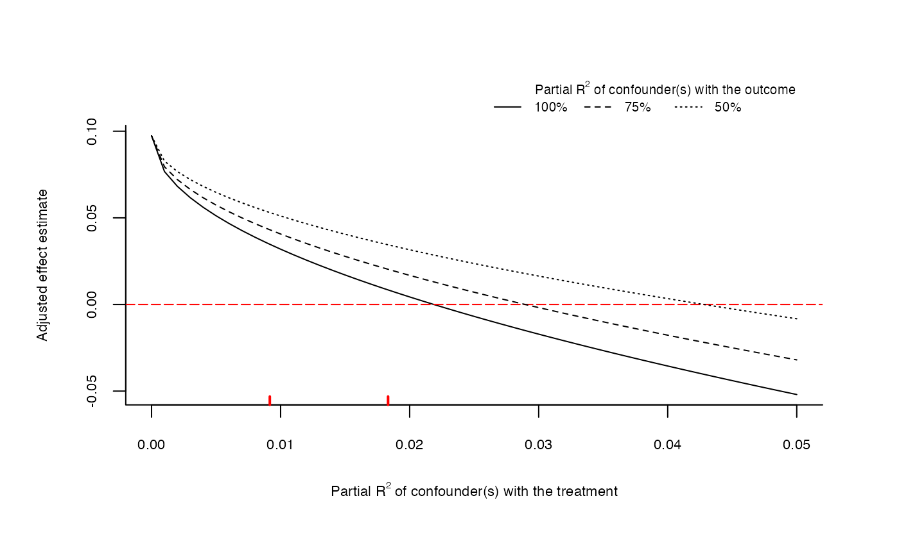

Extreme scenario plots of omitted variable bias for sensitivity analysis. The main inputs are an lm model, the treatment variable
and the covariates used for benchmarking the strength of unobserved confounding.
The horizontal axis shows the partial R2 of the unobserved confounder(s) with the treatment. The vertical axis shows the adjusted treatment effect estimate.
The partial R2 of the confounder with the outcome is represented by different curves for each scenario, as given by the parameter r2yz.dx.
The red marks on horizontal axis are bounds on the partial R2 of the unobserved confounder kd times as strong as the covariates used for benchmarking.
The dotted red line represent the threshold for the effect estimate deemed to be problematic (for instance, zero).
See Cinelli and Hazlett (2020) for details.
ovb_extreme_plot(...) # S3 method for lm ovb_extreme_plot( model, treatment, benchmark_covariates = NULL, kd = 1, r2yz.dx = c(1, 0.75, 0.5), r2dz.x = NULL, reduce = TRUE, threshold = 0, lim = min(c(r2dz.x + 0.1, 0.5)), legend = TRUE, cex.legend = 0.65, legend.bty = "n", ... ) # S3 method for formula ovb_extreme_plot( formula, data, treatment, benchmark_covariates = NULL, kd = 1, r2yz.dx = c(1, 0.75, 0.5), r2dz.x = NULL, reduce = TRUE, threshold = 0, lim = min(c(r2dz.x + 0.1, 0.5)), legend = TRUE, cex.legend = 0.65, legend.bty = "n", ... ) # S3 method for numeric ovb_extreme_plot( estimate, se, dof, r2dz.x = NULL, r2yz.dx = c(1, 0.75, 0.5), reduce = TRUE, threshold = 0, lim = min(c(r2dz.x + 0.1, 0.5)), legend = TRUE, legend.title = NULL, cex.legend = 0.65, legend.bty = "n", xlab = NULL, ylab = NULL, cex.lab = 0.7, cex.axis = 0.7, list.par = list(oma = c(1, 1, 1, 1)), ... )
| ... | arguments passed to other methods. First argument should either be an |
|---|---|
| model | An |
| treatment | A character vector with the name of the treatment variable of the model. |
| benchmark_covariates | a character vector of the names of covariates that will be used to bound the plausible strength of the unobserved confounders. |
| kd | numeric vector. Parameterizes how many times stronger the confounder is related to the treatment in comparison to the observed benchmark covariate.
Default value is |
| r2yz.dx | Hypothetical partial R2 of unobserved confounder Z with outcome Y, given covariates X and treatment D. |
| r2dz.x | Hypothetical partial R2 of unobserved confounder Z with treatment D, given covariates X. |
| reduce | Should the bias adjustment reduce or increase the
absolute value of the estimated coefficient? Default is |
| threshold | estimate threshold. |
| lim | sets limit for plot axis. If `lim.y` is also provided, sets limit for x-axis only. |
| legend | should legend be plotted? Default is |
| cex.legend | size of the text for the legend. |
| legend.bty | legend box. See |
| formula | an object of the class |
| data | data needed only when you pass a formula as first parameter. An object of the class |
| estimate | Coefficient estimate. |
| se | Standard error of the coefficient estimate. |
| dof | Residual degrees of freedom of the regression. |
| legend.title | the legend title. If |
| xlab | label of x axis. If `NULL`, default label is used. |
| ylab | label of y axis. If `NULL`, default label is used. |
| cex.lab | The magnification to be used for x and y labels relative to the current setting of cex. |
| cex.axis | The magnification to be used for axis annotation relative to the current setting of cex. |
| list.par | arguments to be passed to |
The function returns invisibly the data used for the extreme plot.
Cinelli, C. and Hazlett, C. (2020), "Making Sense of Sensitivity: Extending Omitted Variable Bias." Journal of the Royal Statistical Society, Series B (Statistical Methodology).
# runs regression model model <- lm(peacefactor ~ directlyharmed + age + farmer_dar + herder_dar + pastvoted + hhsize_darfur + female + village, data = darfur) # extreme scenarios plot ovb_extreme_plot(model, treatment = "directlyharmed", benchmark_covariates = "female", kd = 1:2, lim = 0.05)